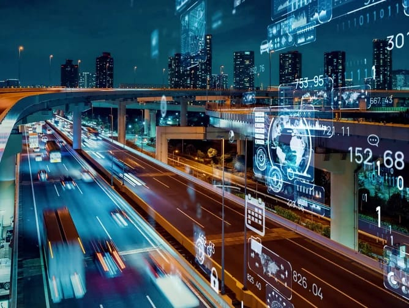

AI in Transportation
From self-driving cars to predictive maintenance in aviation, AI is driving innovations that promise safer, more efficient modes of transportation. Autonomous vehicles equipped with AI technology can navigate traffic, detect obstacles, and make split-second decisions to ensure passenger safety. In logistics and supply chain management, AI optimizes route planning, inventory management, and delivery scheduling, reducing costs and environmental impact. AI-powered predictive maintenance systems also help prevent mechanical failures and minimize downtime in transportation infrastructure.

Q1: How is AI used in autonomous vehicles?
A1: AI is used in autonomous vehicles to perceive their environment, make real-time decisions, and navigate safely without human intervention.
Examples:
Q2: What role does AI play in traffic management?
A2: AI plays a crucial role in traffic management by analyzing traffic patterns, predicting congestion, and optimizing traffic flow.
Examples:
Q3: How does AI enhance vehicle safety?
A3: AI enhances vehicle safety by detecting potential hazards, alerting drivers, and autonomously taking preventive actions.
Examples:
Q4: In what ways is AI used in public transportation?
A4: AI is used in public transportation to optimize routes, improve scheduling, and enhance passenger experience.
Examples:
Q5: How is AI contributing to the development of smart cities?
A5: AI contributes to the development of smart cities by integrating transportation systems with other urban infrastructure for efficient and sustainable urban mobility.
Examples:
Q6: What are the challenges of implementing AI in transportation?
A6: Challenges of implementing AI in transportation include regulatory hurdles, public acceptance of autonomous technologies, cybersecurity risks, and the need for infrastructure upgrades.
Examples:
Q7: What future trends can we expect in AI-driven transportation?
A7: Future trends in AI-driven transportation include widespread adoption of autonomous vehicles, development of hyperloop and other high-speed transit systems, and integration of AI with electric and sustainable transportation solutions.
Examples:
Q8: How does AI impact the future of autonomous drones and aerial transportation?
A8: AI impacts the future of autonomous drones and aerial transportation by enabling navigation, monitoring airspace traffic, and enhancing safety protocols.
Examples: